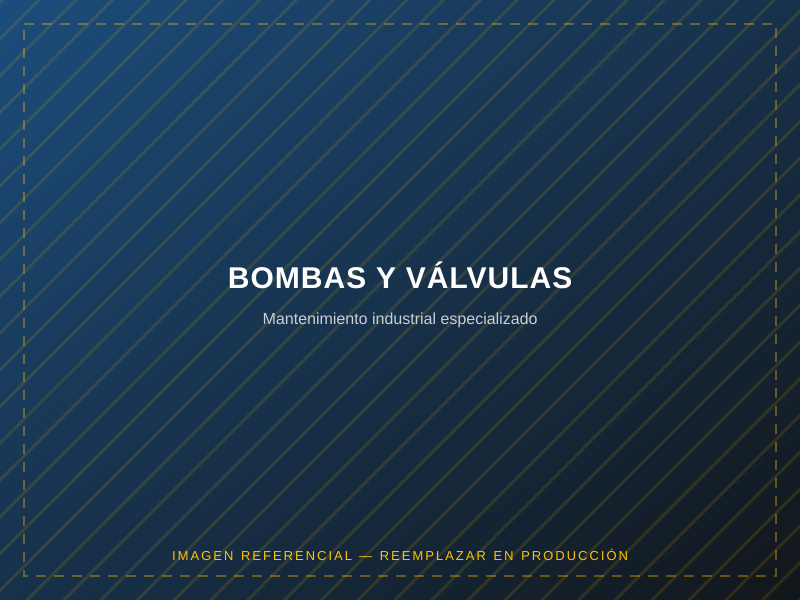

Servicios
Bombas y válvulas industriales
Diagnóstico, reparación y mantenimiento especializado de bombas y válvulas industriales.
Servicios / Bombas y válvulas

Descripción del servicio
Realizamos diagnóstico técnico, reparación y mantenimiento de bombas y válvulas industriales, buscando restablecer su rendimiento original y prevenir fallas que afecten la continuidad de los procesos de planta.
Aplicaciones típicas
- Bombas centrífugas y de desplazamiento positivo
- Válvulas de control y de bloqueo
- Diagnóstico de vibración y fugas
- Reemplazo de sellos, rodetes y componentes internos
| Equipos atendidos | Bombas centrífugas, de desplazamiento positivo y válvulas industriales |
|---|---|
| Servicios | Diagnóstico, reparación, reacondicionamiento |
| Entregables | Informe técnico con hallazgos y recomendaciones |
| Modalidad | En taller o en planta del cliente |
Especificaciones referenciales; alcance exacto depende de marca y modelo del equipo. No incluye precios — solicita una cotización.